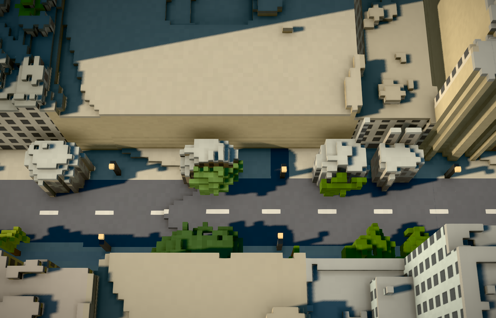
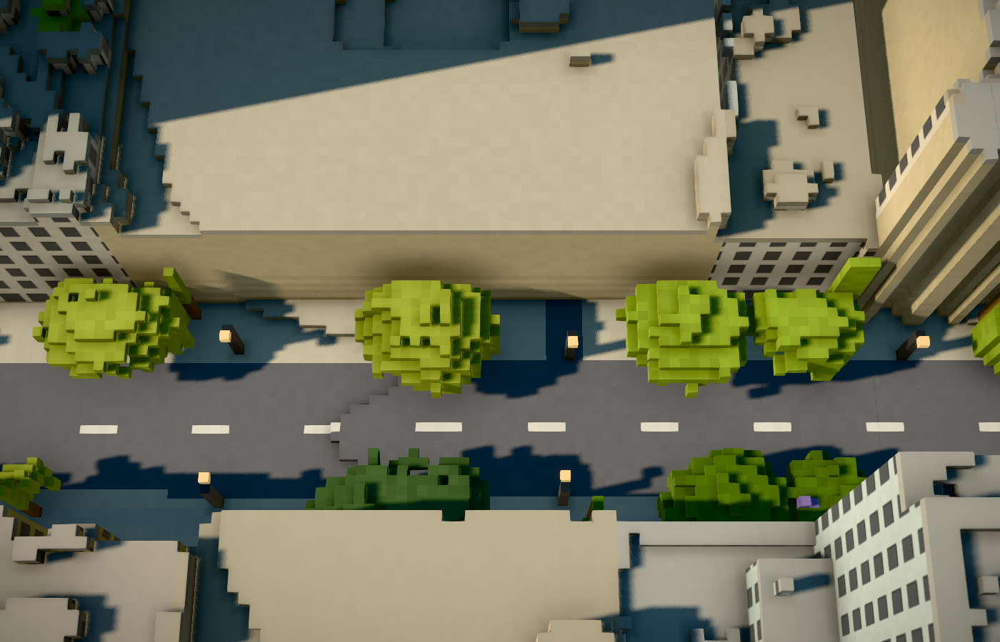

November 2, 2026 · feat/voxel-classification · initial data baseline c043114
Dense tree crowns can look solid to LiDAR at their centre while returning multiple echoes around their edges. The previous classifier voted separately for each 1 m cell. Spectrally dark, dense interiors failed that vote and became unmapped buildings, filled all the way to the ground.
The user identified large trees on the east side of the garage as small voxel towers. The cached footprint is OSM way 428021744, listed as 833 S Flower Street (reported as 839 in the issue). The four erroneous solid components occupy 79, 56, 64 and 52 square metres. Their median measured heights are about 10–11 m; their interiors have negative vegetation-index values and mostly single returns.


All four false solid objects are gone from the exported base tiles: 0 remaining solid cells in each. Foliage covers 79/79, 56/56, 63/64 and 47/52 of their original cells. Mapped building heights in this crop, terrain, palette, labels, obstruction lights and the roof/road/landmark diagnostics are unchanged. All 63 pipeline tests and the frontend production build pass.
Across the export, crown evidence recovers 47,887 previously missed vegetation-vote cells; 25,338 cells receive the elevated-attachment treatment. The per-component evidence audit is written to DTLA_CACHE/vegetation-review/classification.json; aggregate counts are also included in meta.json.
This is an evidence-based heuristic, not a surveyed identification of every tree, billboard, awning or flag. It uses the existing 2023 LiDAR and 2022 NAIP inputs. It does not cut into mapped building footprints to recover ambiguous overlapping crowns, reconstruct unseen flags, or assign equipment identities. Thin features without a supported elevated underside retain the previous treatment. Procedural foliage/structure colours can change when segmentation changes.
The Flower Street case has direct input and exported-voxel checks. Awning, flag, kiosk and sloping-roof safeguards also have synthetic tests; these do not establish ground truth for every historic facade in Los Angeles.
Procedural streetlight placement avoids structures and crowns. The updated masks remove 86 previous lamp positions and introduce 8 positions across the scene; these are generated placements, not changes to surveyed lamps.
# PowerShell, from the repository root
$env:PYTHONPATH='scripts'
uv run python -m unittest discover -s scripts -p 'test_*.py'
# Rebuild all levels using cached source data
uv run python scripts/voxelize.py
# Inspect the Flower Street crop (use --data to inspect a saved baseline)
uv run python scripts/audit_vegetation.py
# Compare against the saved pre-change export
uv run python scripts/validate_vegetation.py --baseline C:/data/dtla-voxel-cache/vegetation-baselineDTLA_VEGETATION_CLEANUP=0 disables this pass when rebuilding; 1 is the default. The regression fixture contains the relevant raw raster crop and original solid heights, so unit tests do not require the full survey cache. The complete export comparison does require a saved baseline.
Classifier · Regression tests · Fixture provenance · Export validation (local generated report) · Source-object measurements (local generated report)